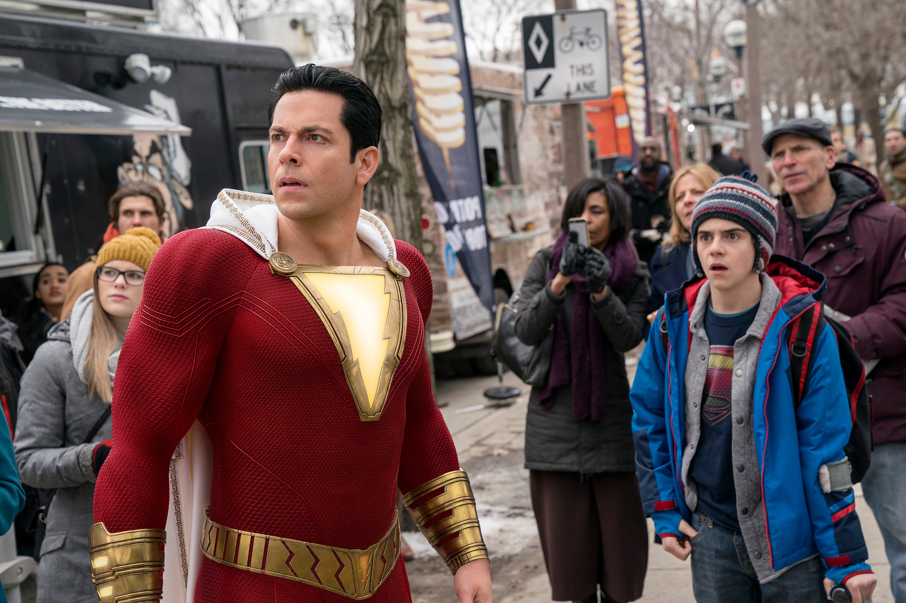
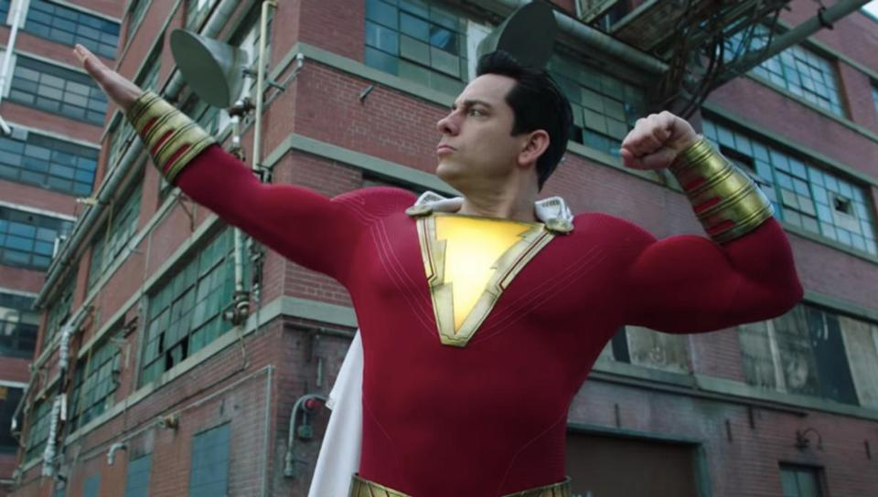
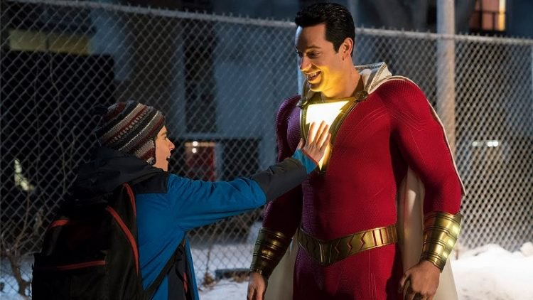
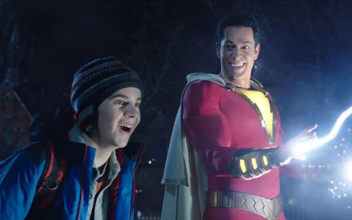
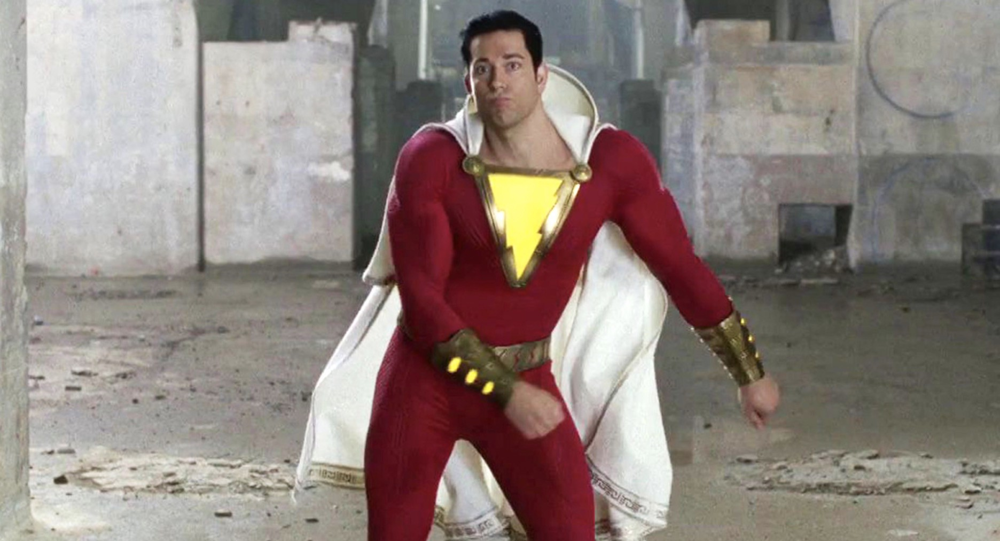

Shazam
Phim hài cười ỉa =))
(Shazam mà khs mình cứ đọc là Shamza, lúc book vé vẫn quen mồm nên quê độ vl)
Mình hổng phải là người xem quá nhiều phim của DCEU nên k dám so sánh nhiều. Batman với Superman còn chưa xem là các bác biết rồi ý ạ. Nhưng chẳng cần có kiến thức về DCEU, các bác vẫn có thể thưởng thức Shazam ngon lành cành đào vì nó chả liên quan gì lắm tới những phần khác trong vũ trụ DC cả.

Khác biệt dễ nhận ra nhất có thể nói là màu phim của Shazam khá sáng sủa, khác với kiểu đen kịt u tối của một số phim DCEU mình đã từng xem rất nhiều.

9/10 điểm về giải trí. Suốt cả 2 tiếng xem phim lúc nào cũng cười rơi họng. Phim mang tính tấu hài cực mạnh làm mình liên tưởng đến Deadpool, nhưng C13 nên nó k bẩn bựa như Deadpool đâu hihi.

Một điểm mình thích nữa ở Shazam là nội dung khá gần gũi với tuổi thơ. Những điều Freddy bảo Billy làm khi phát hiện có siêu năng lực trúng phóc những điều hồi bé mình đã nghĩ và làm còn thử y hệt Billy luôn. Đoạn đấy với mình ấn tượng vãi. Trời ơi cứ nghĩ đến lại thấy ngớ ngẩn phát dồ =)))

Phim k có nhiều kĩ xảo hoành tráng lắm, nhiều đoạn mình còn cảm giác như đang xem siêu nhân cuồng phong các thứ. À còn một điều mình không thích là nhiều trang phục siêu anh hùng của DCEU cứ bóng bóng cong cong thế nào ý nhỉ =)) Chỉ là không hợp gu mình lắm.

Nhìn chung Shazam là một bộ phim giải trí đáng xem sau những ngày stress vl.
Mạnh dạn 8/10 đỉm.